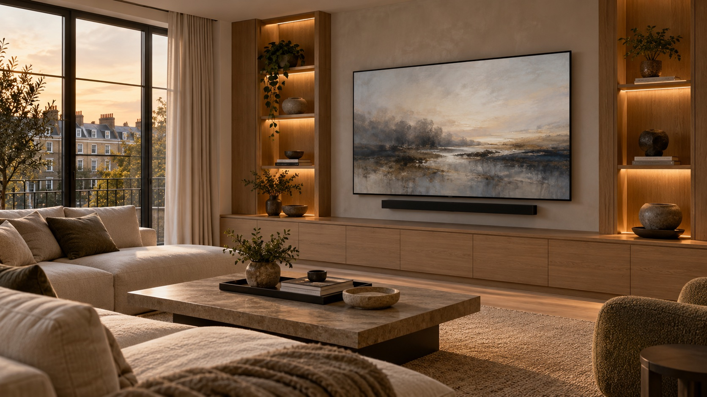
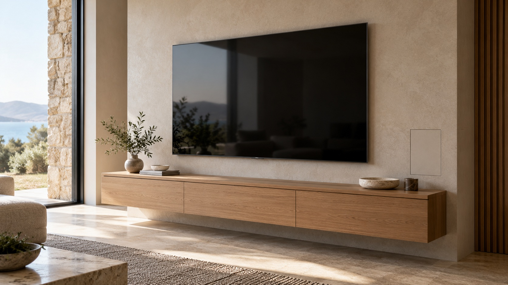

TV mounting
Choose a practical screen position around seating, furniture and viewing height, then mount it with care.
TV & ENTERTAINMENT
A well-placed screen, neat connections and the right setup make it easier to enjoy the things you love.
Get in touch
THE SCREEN IS ONLY THE START
Great everyday viewing depends on more than the screen. Position, power, signal and equipment all need to work together, especially when a room is being renovated or a media wall is planned.

PLANNED BEFORE IT GOES ON THE WALL
We can help work through viewing position, screen height, cable routes and where your equipment will live. If joinery or a media wall is part of the project, discussing those details early helps avoid last-minute compromises.
Consider the seating, viewing angle and height before choosing the final screen location.
Decide where connections and equipment need to sit, then plan for a neat finish.
Connect the streaming devices and audio you use, with simple controls for everyday viewing.
THE DETAILS MAKE THE DIFFERENCE
We plan the screen, power, signal and equipment together, so the finished space feels considered.
Choose a practical screen position around seating, furniture and viewing height, then mount it with care.
Plan power and signal routes with the screen and equipment locations so fewer cables remain visible.
Coordinate screen size, cable routes and equipment space with your joiner or interior plans.
Bring your display, chosen sources and audio together for the way your household watches.
Connect the streaming devices and services you use, then make them clear and easy to find.
Consider how the TV setup connects with audio, Wi-Fi and home control when these are part of the project.
START WITH A CONVERSATION